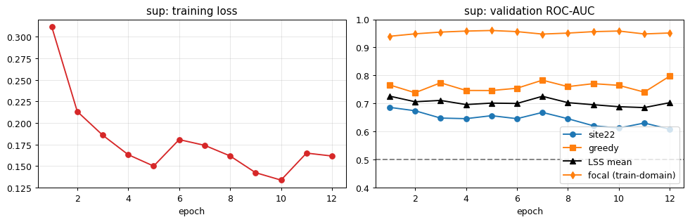
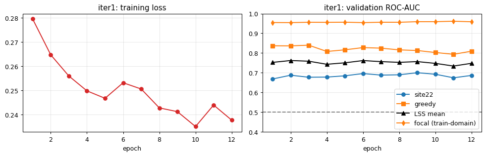
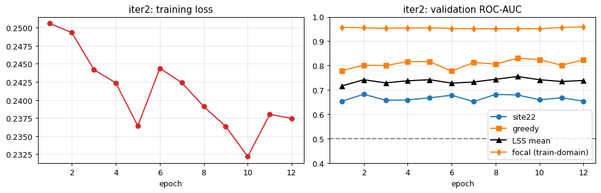

Project Overview
This system was designed to address the challenge of identifying wildlife species in the Pantanal wetlands of Brazil. Given the density of the environment and the overlapping nature of wildlife calls, the task requires more than simple classification; it requires fine-grained Sound Event Detection (SED) capable of isolating individual vocalizations from complex, multi-species acoustic soundscapes.
Read the full article here

Architectural Evolution
The solution progressed through distinct phases of maturity, moving from a brittle baseline to a robust ensemble pipeline:
- Phase 1 (The Baseline): I began with a standard supervised training approach using EfficientNet backbones. Early versions suffered from training instability (BatchNorm/AMP collapses), resulting in a baseline AUC of ~0.50.
- Phase 2 (Self-Training): To scale, we implemented a "Noisy Student" self-training loop. By generating pseudo-labels on unlabeled data, we introduced the model to a wider variety of acoustic conditions, bringing the system to a ~0.72 AUC.
- Phase 3 (The Distillation Pivot): The final breakthrough came from incorporating teacher distillation using Perch v2 cosine embeddings. This provided the largest performance lift, specifically aiding the identification of weaker taxa (such as Aves) that were previously difficult to distinguish from background noise. Kaggle final submission score: Public 0.79672, Private 0.80297.



Key Lessons Learnt
1. Leaderboard vs. Internal Benchmarks: Early in the project, I observed a divergence between the leaderboard score and internal validation (the "Site-22" proxy). I learned to treat the leaderboard as a directional signal rather than an absolute ground truth, relying instead on a deliberate, leak-free held-out subset (Site-22) to validate generalization.
2. Fixing Failure Modes > Tuning Hyperparameters: Much of the project's success was not the result of exhaustive hyperparameter searching, but rather the systematic elimination of "silent" failure modes—such as improper checkpointing during resumes or tensor layout mismatches in the SED head.
3. Distillation as an Architecture: Integrating Perch v2 was the most significant technical lever. It taught me that in complex classification tasks, leveraging a "teacher" that already understands the domain is often more effective than attempting to train a "student" from scratch on noisy data alone.
Engineering Approach
The final inference pipeline utilizes a robust ensemble. By rank-blending predictions from different backbones (EfficientNetV2/NFNet) alongside the distilled Perch v2 outputs, the system achieves a balanced predictive capability that outperforms any single-model configuration. FiLM metadata conditioning allows the model to interpret acoustic features in the context of temporal and spatial metadata, further reducing false positives in dense soundscapes.
Let's Connect
I enjoy discussing the intersection of deep learning and environmental conservation. If you are exploring how acoustic monitoring or sound event detection could solve problems in your sector—or if you have questions regarding the teacher-student distillation patterns used here—I welcome your inquiry.
Connect on LinkedIn